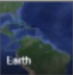

<b-modal
    v-model="modalShow"
    size="lg"
    no-close-on-backdrop
    hide-footer
    hide-header
    hide-header-close >
    <div class="modal-content popup-box">
      <div class="popup-header">
        <div class="title"><span class="icon one-notepad"></span>Tra cứu bản đồ mạng cáp</div>
        <div class="close -ap icon-close" data-dismiss="modal" @click="closeModal">
        </div>
      </div>
      <div class="list-actions-top">
        <ul class="list">
          <li>
            <a href="#/ecms/tracuu-bando-mangcap" @click="timKiemKC">
              <span class="icon one-search"></span> Tìm kết cuối
            </a>
          </li>
        </ul>
      </div>
      <div class="popup-body">
        <div class="map-canvas-box">
          <div class="sitemap-chart-canvas relative" style="height: 800px;">
            <BanDo :center="center" :markers="getMarkers" :radiusObj="radiusObj" ref="map">
            </BanDo>
        </div>
        <ModalChonDiaChi modalId="popupDiaChi" :data="this.dataSelected" @xacnhan="getDiaChi"/>
        <div class="search-box">
          <div class="info-row">
            <div class="value">
              <div class="input-icon-left">
                <span class="icon nc-icon-outline ui-1_zoom"></span>
                <input type="text" placeholder="" class="form-control" v-model="this.diachi">
              </div>
            </div>
            <div class="value nowrap w30">
              <button class="btn btn-second" v-b-modal.popupDiaChi>
                <span class="-ap icon-more_horiz"></span>
              </button>

              <button class="btn btn-main" @click="addMarker()" >
                <span class="nc-icon-glyph location_position-pin"></span>
              </button>
            </div>
          </div>
        </div>
        <div class="action-right">
          <a href="#/ecms/tracuu-bando-mangcap" class="change-type" @click="thaydoiMapType">
            
          </a>
          <div class="ranger-slider">
            <div class="title">Bán kính tìm kiếm {{this.defaultRadius}}(m)</div>
            <div class="slider">

            <div class="block">
              <el-slider
                v-model="value"
                :format-tooltip="formatTooltip"
                vertical
                @change="changeR"
                height="275px"
                float= "right"
                margin-right= "0px">
              </el-slider>
            </div>
              <div class="dot">
                <span></span>
                <span></span>
                <span></span>
                <span></span>
                <span></span>
                <span></span>
                <span></span>
                <span></span>
                <span></span>
                <span></span>
              </div>
              
            </div>
          </div>
          <div class="input-number-custom">
            <input type="number" min="0" max="1000" class="form-control tright" v-model="defaultRadius" v-on:change="changeRadius">
          </div>
        </div>
        </div>
        <div class="map-position">
          <div class="row">
            <div class="col-sm-2 col-12">
              <div class="info-row marb0">
                <div class="key w30 nowrap">Vĩ độ</div>
                <div class="value">
                  <input type="text" class="form-control" v-model="viDo" :disabled="validated == 1">
                </div>
              </div>
            </div>
            <div class="col-sm-2 col-12">
              <div class="info-row marb0">
                <div class="key w30 nowrap">Kinh độ</div>
                <div class="value">
                  <input type="text" class="form-control" v-model="kinhDo" :disabled="validated == 1">
                </div>
              </div>
            </div>
            <div class="col-sm-8 col-12" style="border-left: 1px solid #e0e0e0;">

              <div class="info-row marb0">
                <div class="key w30 nowrap">Bán kính tìm kiếm</div>
                <div class="value w60">
                  <input type="text" value="298" class="form-control" v-model="defaultRadius" :disabled="validated == 1">
                </div>
                <div class="value w10 nowrap padr10">
                  <div class="unit mart7">(m)</div>
                </div>
                <div class="value padl10" style="border-left: 1px solid #e0e0e0;">
                  <input type="text" class="form-control tright" value="Tìm thấy 36 kết cuối trong bán kính 298 m" v-model="ketquaTK" :disabled="validated == 1">
                </div>
              </div>
            </div>
          </div>
        </div>
        </div>
      </div>
  </b-modal>